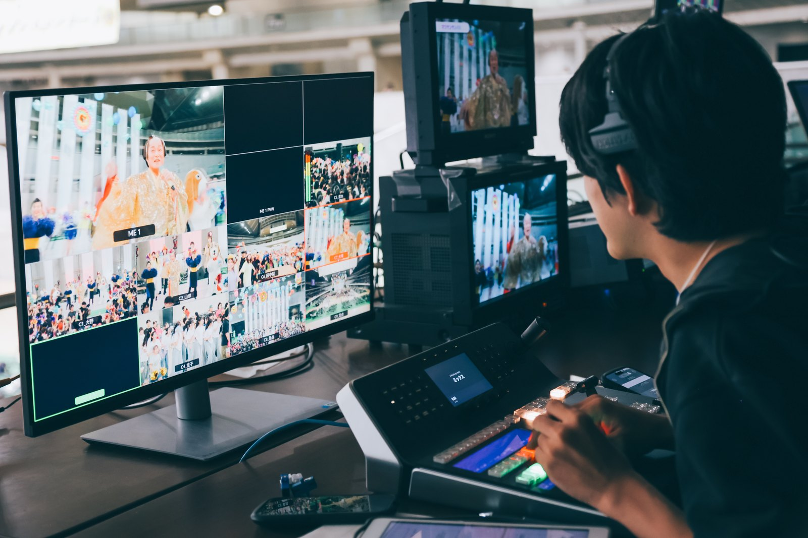
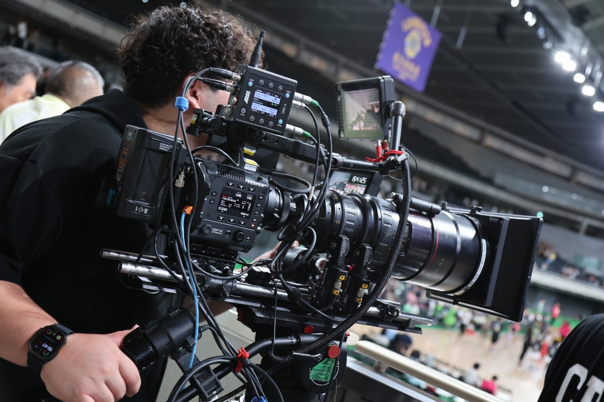

ドレミファダンスコンサート2026 生配信
2026年6月14日に生配信した「ドレミファダンスコンサート2026」で、9カメラのスイッチングを担当しました。特別ゲスト・松平健さんの「マツケンサンバⅡ」をはじめ、数多くの参加団体の演技と会場の笑顔を、5時間半ぶっ通しでリアルタイムに切り替えながら届けた本番です。前年にメイキング撮影のボランティアとして参加したこのイベントに、今年はボランティア配信チームの幹部のひとりとして、事前の準備段階から関わりました。

9つの画から一瞬で選ぶ
担当したのは、9台のカメラをリアルタイムで切り替えるスイッチング。ダンスの本番は一回きりで、やり直しがききません。マルチビューで9つの画を同時に追いながら、演目の進行に合わせて次のカメラをプレビューに仕込み、寄りと引き、ステージと客席を行き来させて会場の熱をそのまま届けました。松平健さんの「マツケンサンバⅡ」のような大きな見せ場では、どの瞬間にどの画を出すかの一手が配信の印象を決めます。これを5時間半、集中を切らさずに続けるのがこの現場です。
光ファイバー＋ワイヤレスの伝送設計
広い会場に9台のカメラを配置するため、各カメラとスイッチャーの間は光ファイバーケーブルで伝送しました。機動力が必要なジンバルカメラだけはワイヤレス映像伝送（MARS）で飛ばし、ケーブルに縛られずに会場を動き回れる編成です。今回の編成で最大のカメラは、大判センサーのシネマカメラ FUJIFILM GFX ETERNA でした。


左：マルチビューを前に9カメをスイッチングする筆者。右：今回の編成で最大のカメラ、FUJIFILM GFX ETERNA。
マツケンサンバⅡで1カメが落ちた
一番気合いを入れて臨みたかった「マツケンサンバⅡ」のタイミングで、1台のカメラの接続が切れました。正直、焦りました。ただそこで立ち返ったのが、自分の基本——「引きの画で適度に情報を伝え、キメは寄りで獲る」。残ったカメラでこの原則を守り、切り替えを組み直しながら見せ場を乗り切りました。
アーカイブを見返すと、分かる人が見ればあのパートで焦っているのは伝わると思います。それでも、本番中の自分が思っていたよりは見られるスイッチングになっていました。その後は冷静さを取り戻し、最後の一枚まで切り替えきっています。生放送は想定どおりには進まない——それでも配信を止めずに届けきる経験を、いちばん大きな見せ場で積めた本番でした。
本番は当日の前から始まっている
配信を担ったのは23名のボランティアチームで、そのうち7名の幹部のひとりを務めました。前年はメイキング撮影のボランティアとして参加したイベントに、今年は運営の中核側から関わった形です。
スイッチャーとしての事前準備は、カメラワークの設計。主催団体の方と打ち合わせを重ね、「この演目のこのポイントでは、この画を出す」という切り替えのプランを、本番前に組み上げていきました。当日のスイッチングは、この準備の上に成り立っています。
- 配信
- 2026年6月14日／5時間半の生配信（アーカイブ公開中）
- イベント
- 東京都障害者ダンス大会「ドレミファダンスコンサート2026」／東京体育館・参加者約4,000人
- 担当
- スイッチング（9カメ）／ボランティア配信チーム（23名・幹部7名）の幹部として、主催団体との打ち合わせ・カメラワーク設計など事前準備から参加
- システム
- カメラ—スイッチャー間：光ファイバー伝送／ジンバルカメラ：ワイヤレス映像伝送（MARS）
- カメラ
- 9台編成（最大：FUJIFILM GFX ETERNA）
- 特別ゲスト
- 松平健（「マツケンサンバⅡ」）